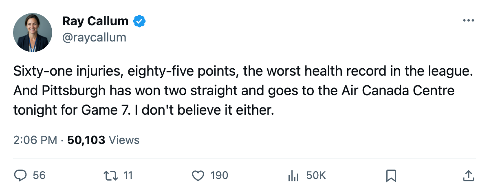

Game 7: Pittsburgh at Toronto tonight — the 7th seed goes for the upset on the road
Three straight wins has the Penguins one game from a conference final; Mario Lemieux has 11 points in 12
 Ray CallumSenior correspondent · Home Ice Network
Ray CallumSenior correspondent · Home Ice Network
The  Pittsburgh Penguins Penguins arrive at the Air Canada Centre tonight tied at 3-3 with the 1-seed
Pittsburgh Penguins Penguins arrive at the Air Canada Centre tonight tied at 3-3 with the 1-seed  Toronto Maple Leafs, riding a two-game winning streak and carrying the worst health record in the league. Pittsburgh has 61 designated injury spells across 674 days lost this season, the most of any club.
Toronto Maple Leafs, riding a two-game winning streak and carrying the worst health record in the league. Pittsburgh has 61 designated injury spells across 674 days lost this season, the most of any club.  Mario Lemieux88 has 3 goals and 8 assists for 11 points in 12 playoff games, tied with
Mario Lemieux88 has 3 goals and 8 assists for 11 points in 12 playoff games, tied with  Gary Roberts88 at the top of this series' scoring.
Gary Roberts88 at the top of this series' scoring.
The home ice problem
Toronto finished 33-8 at home in the regular season, the best mark in the league. In this series, the Maple Leafs are 1-2 at home: they lost Game 1 by two goals, won Game 2 by one, and lost Game 5 0-2 on 2005-05-30. Pittsburgh is 2-1 in the building on the other end. The pattern doesn't say much about Game 7 in isolation, but it means this isn't a team that has dominated on its own ice through the spring.
 Roberto Luongo94's line for the postseason is 7-4 with a 1.99 GAA and a .945 save percentage. But Luongo faced 35 shots in Game 6 on 2005-05-02 and let in 3 in overtime, and Pittsburgh has scored 13 goals in its last 3 games.
Roberto Luongo94's line for the postseason is 7-4 with a 1.99 GAA and a .945 save percentage. But Luongo faced 35 shots in Game 6 on 2005-05-02 and let in 3 in overtime, and Pittsburgh has scored 13 goals in its last 3 games.  Johan Hedberg87 is 6-5 with a 2.08 GAA and .907 save percentage. He has 1 shutout, the 2-0 in Game 5.
Johan Hedberg87 is 6-5 with a 2.08 GAA and .907 save percentage. He has 1 shutout, the 2-0 in Game 5.
What Pittsburgh has
The Penguins scored 255 goals in 82 regular-season games and allowed 275, a minus-20 differential that would have missed the playoffs in most conferences. They made the field at 85 points, the lowest eighth-seed equivalent in the East.
Eric Meloche77 leads Pittsburgh's blueliners with 5 goals and 3 assists for 8 points.  Shane Willis74 has 7 points in 12.
Shane Willis74 has 7 points in 12.  Martin Straka85 carries 8 points. The scoring is spread across four lines the way Dave Tippett's Dallas clubs do it, except Pittsburgh's version has been assembled from whoever could pass a medical.
Martin Straka85 carries 8 points. The scoring is spread across four lines the way Dave Tippett's Dallas clubs do it, except Pittsburgh's version has been assembled from whoever could pass a medical.
Tonight
The winner plays the survivor of  Washington Capitals and
Washington Capitals and  Tampa Bay Lightning in the next round. Washington swept Tampa Bay 4-0. The Capitals played
Tampa Bay Lightning in the next round. Washington swept Tampa Bay 4-0. The Capitals played  Olaf Kolzig87 in 74 games this season; Tampa Bay managed 61 injury spells before the season ended. Neither team is fresh.
Olaf Kolzig87 in 74 games this season; Tampa Bay managed 61 injury spells before the season ended. Neither team is fresh.
Pittsburgh has never beaten Toronto in a Game 7 because these clubs have never met in a Game 7.
